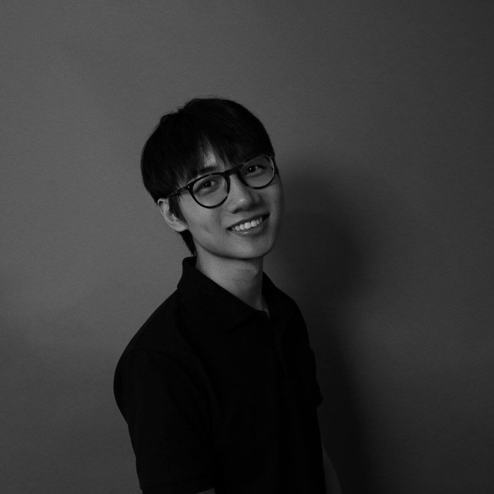

Zeyao Li is a queer coder and artist from China. He was born and raised in Beijing, studied and lived in New York, Prague, Seattle, and Shanghai. Having this multi-cultural background, Zeyao couples the technical skill that he
acquires with observations from his surroundings. His work ranges from Analog Photography to Interactive Installation and Mixed Reality.
Zeyao worked as a production intern at R/GA Shanghai
in 2018. At R/GA, he applied his knowledge to a larger scale’s work, served clients such as Google, Nike, and
Siemens.
Before that, he was a correspondent at PragueCast, an editorial
intern at the i-D magazine, and a musical actor at NYU's Reality Show.
He is currently a senior student majoring in
Interactive Media Arts at NYU Shanghai, and he is expected to graduate in May 2019.
Contact: zeyao.li@nyu.edu
